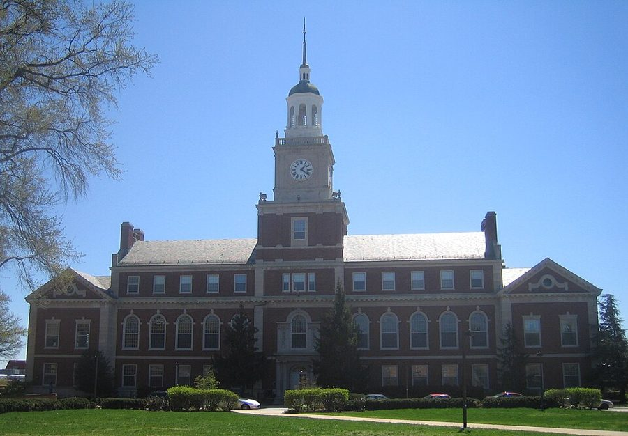
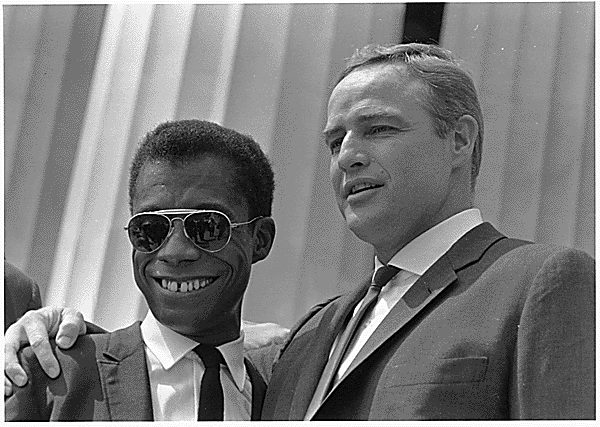
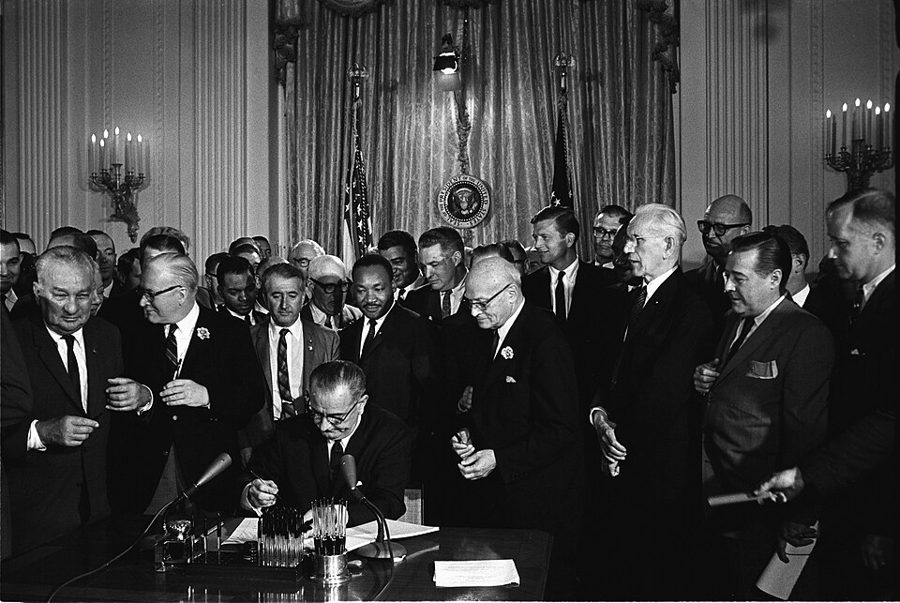
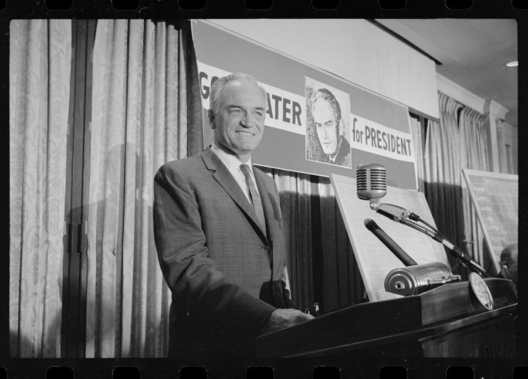
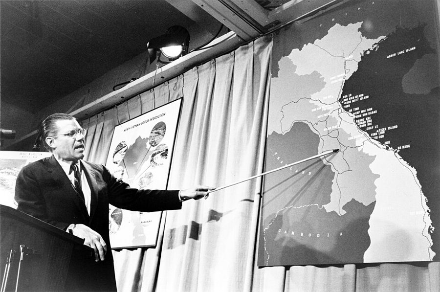

这一章在做什么
接上一页：辞掉道格拉斯学院之后，33 岁的他回母校霍华德教了一年书，又去纽约的 A.T.&T. 做了一年，1965 年转往康奈尔。两份工作之间穿插着他对民权运动、戈德华特和越战的看法，多半引自当年的信。
读的时候分清两个声音：1964 年写信的他，和 2000 年回头评说的他。
1963 1964 1965 1966
8 月 华盛顿大游行
7 月 民权法案
11 月 大选
3 月 美军登陆岘港
道格拉斯
霍华德（华盛顿）
A.T.&T.（纽约）
康奈尔
10 月 递辞职信
12 月 康奈尔面谈
结婚，搬进格林威治村
夏天搬去伊萨卡
33 岁 34 岁 35 岁
本站示意图。色条是他在哪里领工资，上面是外面的大事，下面是他自己的事。月份按书里的说法，结婚和搬家只能确定到年。
出场的人
这一页有名字的人不多，没名字的「系主任」「院长」倒有好几个，先分清是哪所学校的。
Mrs. Gadsden Mrs. G，/ˈɡædzdən/，女 第 5 章里霍华德的英文老师，帮他转去哈佛的人。她在几内亚教过书。这里她把已经当了老师的作者训了一顿。
the department chairman 霍华德经济系主任，没有名字 许诺用暑期研究补助补足薪水。第 23 节揭开这笔钱的真相，之后两人几乎不说话。
the dean 霍华德的院长，没有名字 学生排队找他告状，他来找作者。第 24 节的长对话就是和他。
几内亚来的女生 没有名字 暑期班的学生，刚到美国，头两次测验都不及格。第 22 节整节讲她。
Charles 男 亲哥哥，住华盛顿，第 3 章出场。这里只是 1963 年 4 月那封信的收信人。
Al 男，社会学家 上一页介绍过的激进派朋友，住纽约格林威治村（Greenwich 读 /ˈɡrenɪtʃ/）。作者搬来后成了邻居，章末那段对话是和他。
Jim 男，经济学家 劳工部时期的黑人同事，上一页出场。这时已在 A.T.&T.，和作者同一个部门。
my wife 名字没有出现 第 26 节用半句话交代结婚。照 Preface 说的，感情生活他不写。
Nort 和 Ralph 都是男的 哈佛时的两个室友（第 5 章）。1965 年两人在反对越战的公开声明上签了名。
Stigler 和 Friedman /ˈstɪɡlər/、/ˈfriːdmən/ 芝加哥大学的两位老师。第 23 节里一起劝他别在开学第一周走人。
两个 Jim，四个系主任。 第 19 节他对着电视说的 “Jim” 是作家 James Baldwin，不是朋友 Jim。
department chairman 在这一章指过四个人：道格拉斯的（上一页）、American University 的（上一页）、霍华德的（第 20–24 节）、康奈尔的（第 31 节）。只有霍华德这位和他结了仇。
背景：作者默认你知道的事
霍华德和「黑人大学」

霍华德大学的 Founders Library，1939 年落成，校园的标志。照片摄于 2006 年。D Monack，公有领域，维基共享资源 霍华德大学（Howard University）1867 年建于华盛顿，是美国最有名的传统黑人大学，每年有国会拨款。隔离年代黑人进不了多数白人大学，这类学校培养了几代黑人医生、律师和教师。
书里提到的 Tuskegee（书里拼作 Tuskeegee）和巴尔的摩的 Morgan State 是同一类。作者 1950 年代在这里读过夜校，印象很差，见第 5 章。
1963–1964：从大游行到民权法案

1963 年 8 月 28 日，华盛顿大游行上的作家詹姆斯·鲍德温（左）和演员马龙·白兰度。鲍德温那年出版《下一次将是烈火》，是电视上最常见的黑人声音之一，第 19 节写的就是他。
美国新闻署，公有领域，维基共享资源 1963 年 8 月，二十多万人在华盛顿集会，马丁·路德·金发表「我有一个梦」。1964 年 7 月 2 日约翰逊总统签署《民权法案》：旅馆、餐馆等公共场所不得隔离，雇人不得按种族区别对待。
法案在参议院被南方议员用冗长发言拖了两个多月，书里担心的 crippling amendments 就是怕它在表决前被改弱。

1964 年 7 月 2 日，约翰逊在白宫签署《民权法案》，正后方站着的是马丁·路德·金。这时作者刚离开霍华德。Cecil Stoughton（白宫），公有领域，维基共享资源 A.T.&T.：电话就是它
曼哈顿下城百老汇 195 号，A.T.&T. 当年的总部大楼。书里没说他的办公室是不是在这栋楼里。MBisanz，CC BY-SA 3.0，维基共享资源
American Telephone & Telegraph，俗称 Ma Bell。那时美国的电话几乎由它一家包办：母公司管长途，各地子公司管市话，Western Electric 造设备，贝尔实验室做研究，合称 Bell System。
它是政府管制下的合法垄断，1984 年被拆分。书里说它是当时世界上最大的公司。
A.T.&T. 母公司
纽约，管长途。作者在这里
Western Electric
造电话和设备
Bell Labs
做研究
各地电话公司
二十来家，管市话
第 28 节的大食堂
Pacific Bell
加州。头一个人选在这里
C&P
华盛顿一带。替总部面试
本站示意图，对着第 27 节看。书里叫 Pacific Bell 的那家，当时的正式名称是 Pacific Telephone；C&P 是 Chesapeake and Potomac 的缩写。
戈德华特和 1964 年

1964 年 3 月 10 日，新罕布什尔州初选当晚的戈德华特。Marion S. Trikosko，公有领域，维基共享资源 巴里·戈德华特（Barry Goldwater），亚利桑那州参议员，1964 年共和党总统候选人。主张小政府、对苏强硬，对《民权法案》投了反对票。他说话冲，对手把他描绘成会按核按钮的人；11 月他只赢了六个州，约翰逊大胜。
同年 7 月，纽约哈莱姆因警察开枪打死一名黑人少年爆发骚乱，是那年夏天一连串 ghetto riots 的头一场。
越南和「微调」

1965 年 4 月 26 日，国防部长麦克纳马拉在记者会上讲越南。作者挖苦他的那封信也写于这个月。Marion S. Trikosko，公有领域，维基共享资源 1964 年 8 月国会通过东京湾决议，授权总统在越南动武。1965 年 3 月美军开始持续轰炸北越，第一批地面作战部队登陆岘港；同月大学里出现反战「宣讲会」（teach-in），4 月华盛顿有了大规模反战游行。
国防部长麦克纳马拉（Robert McNamara）主张一步步加码，书里说的 fine tune a war 指这个。
博士还没拿到
美国读博士分两步：先修课、过资格考试（上一页已过），再写论文。题目要导师和一个委员会（committee）点头。
他原想写萨伊定律（Say’s Law，粗略说是「供给自己创造需求」），和导师斯蒂格勒谈不拢，这时想改做波多黎各的最低工资，那是第 5 章末他在劳工部碰过的题目。他信里说得明白：没有学位，哪所学校都只是暂时落脚。
留个记号：后面还会回来
这一页里作者有三处直接说了「当时不知道」「现在回头看」或「至今答不上」，另有一句别人的保证。
在国外期刊发文章 第 19 节 他说当时没意识到这是长远的好处：英国、加拿大的编辑不知道他的肤色。tokenism 这个词记住，下一章开头就会再碰到 token。
该不该当场走人 第 23 节 他听了劝，留了下来。In retrospect 后面那句是 2000 年的他在说话，结论和当年相反。
那个男生的问题 第 24 节 学生问：你这样的人来一年就走，我们怎么往前走？他说当时答不上，写书时仍然答不上。
Lorraine 这个名字 第 26 节 Lorraine Hansberry（1930–1965），剧作家，A Raisin in the Sun （1959）是头一部在百老汇上演的黑人女作家的戏。夫妻俩看完她最后一部戏许了个愿。书里把剧名里的 Brustein 拼成了 Blustein。
康奈尔的保证 第 31 节 他提了条件：不许干涉他怎么教书。系主任说康奈尔不会有这种事。下一章就在康奈尔。
词与短语
词条按书里出现的顺序排，小标题是原书用 • • • 隔开的各节。斜体小字是那句话里的几个词，在 Kindle 里搜它就能跳到那一句。单个的生词长按就能查，这里收的主要是词典帮不上忙的。
第 19 节 · 六十年代的空气
ferment
… and social ferment associated with the …
躁动，正在酝酿的大变化
本义是发酵。作名词重音在前 /ˈfɜːrment/。
mind-expanding
… for its “mind-expanding” qualities, though …
「拓展心智」的
L.S.D. 是致幻剂，1960 年代初有人把它当作打开意识的钥匙来宣传。引号是作者在表示不信。
sober up
… until they sobered up and realized …
酒醒过来
整句把吃 L.S.D. 的人比作觉得自己很高明的醉汉。
make a damn fool of oneself
… been making damn fools of themselves. …
出尽洋相
free-lance “spokesmen”
… more or less free-lance black “spokesmen,” …
不属于哪个组织、自己出来替黑人说话的人
free-lance 本是自由撰稿人。和上半句「传统民权组织的领袖」相对；引号表示谁也没推举过他们。
project oneself
… ability to project themselves and their …
在媒体上把自己的形象打出去
project 作动词，重音在后。第 29 节说戈德华特的 image he projected 是同一个用法。
charged
… a quiet but charged voice: …
绷着劲的，一触即发的
像充了电。不是「被指控」「被收费」。
Not me, Jim
… “Not me, Jim,” I said. …
「不是我干的，吉姆。」
他一个人对着电视回嘴。Jim 是 James 的昵称，这里叫的是鲍德温。把 you 故意按字面理解成「我本人」，是在拆对方的修辞。
stock in trade
… was the stock in trade of …
看家本领，惯用手段
本义是店里的存货。
on the moral defensive
… putting others on the moral defensive …
（让别人）在道义上先矮一头，只能辩解
on the defensive = 处于守势。
in tune with
… not in tune with the spirit …
和……合拍
前面加 certainly not，是往轻里说：他和那个年代的主调完全相反。
tokenism
… were due to tokenism or double …
为了装点门面而用一两个少数族裔
token = 象征性的。double standards 这里指对黑人放低标准。这一节的关键词。
第 20、21 节 · 去霍华德
on the job front
… On the job front, I still …
工作这一头
front 是战线。第 30 节还有 On the academic front 。
straight answers
… to get some straight answers as …
不绕弯子的明确答复
上一页就说过从霍华德问不出一句准话，这里是第二次。
stay afloat
… on my savings to stay afloat …
勉强维持，不至于入不敷出
本义是浮在水面上。draw on savings = 动用积蓄。
make it
… to enable me to make it. …
撑得下去
口语里的 make it：办成、赶上、熬过去，看上下文。
resigned to
… more or less resigned to marking …
认了，不指望更好的
不是辞职。这一章 resign 满篇都是「辞职」，只有这一处是「认命」。
mark time
… marking time until I get the …
原地踏步，干等着
军队口令「原地踏步」。等的是博士学位。
on guard against
… very much on guard against drifting …
时时提防
后面的 drifting into 是不知不觉滑进去。章名 Drifting Along 里的也是这个词。
start lower
… Howard students often started lower when …
入职时定的级别低
指政府的 GS 级别（见上一页）。他在劳工部亲眼见过。
give a good account of oneself
… gave a good account of themselves …
表现得相当不错
和「汇报」无关。
allow myself to believe
… and I allowed myself to believe …
我让自己相信了
这么写就是在预告：后来证明不是。niche （合适的位置）读 /nɪtʃ/ 或 /niːʃ/。
第 22 节 · 几内亚来的女生
International House
… route from the International House to …
外国留学生住的宿舍
几内亚在西非，1958 年脱离法国独立，通用法语。她是到了美国才用英语上课的。
bring myself to
… Whether I can bring myself to …
狠得下心去（做）
几乎只用在否定和疑问里。
hit somebody who’s down
… really hitting somebody who’s down.” …
打一个已经倒地的人
down 是被打倒在地。
passing work
… she does not do passing work?” …
够及格的功课
这一节的 pass 都是「让……及格」。
guilty white liberals
… of those guilty white liberals you’re …
心怀愧疚的白人自由派
Mrs. G 拿他自己常说的话堵他。paternalism ：像家长对孩子那样的照顾，这里指对黑人学生放水。
know better
… of you, Tom. You know better!” …
你明明懂这个道理
不是「知道得更多」。You should know better 是长辈责备晚辈的话。
finish with
… when Mrs. Gadsden finished with me, …
把（我）数落完
a lost cause
… on her as a lost cause. …
没指望的事（人）
go through the motions
… kept going through the motions of …
走过场，做做样子
他自己都不信辅导有用，只是不好意思停。
the spell was broken
… Once the spell was broken, she …
魔咒一解除
spell 是咒语，不是拼写。
make up lost ground
… she quickly made up lost ground. …
把落下的追回来
a solid B
… grade was a solid B. …
稳稳当当的 B
solid = 不是擦边的。美国成绩 A 到 D 及格，F 不及格。
allowance
… with no special allowance for a …
照顾，通融
不是零花钱。make allowance for = 把某个情况考虑进去而放宽。
earn every bit of it
… she earned every bit of it.” …
每一分都是自己挣来的
这里的 overjoyed 是真高兴，不用反着读。
第 23 节 · 那笔补助
dicey
… Financially, things were becoming dicey. …
悬了，没把握
从 dice（骰子）来的口语。
through channels
… be moving slowly through channels. …
走正式的审批程序
channels 是层层上报的渠道。下面的 went over the channels 是越过它们，直接找管事的人。
the wheels are turning
… administrative wheels were supposedly turning. …
（行政的）机器据说在运转
supposedly = 据说，实际没有。
hold up
… asked what was holding up my …
卡住，耽搁
不是举起，也不是抢劫。
safely out of the country
… was safely out of the country …
人已经稳稳当当出了国
safely 是挖苦：对系主任来说安全，作者够不着他。
hold against
… would be held against me for …
记在我账上，日后拿来对我不利
against my better judgment
… much against my better judgment. …
明知不该，还是照做了
let the chips fall where they may
… let the chips fall where they …
后果如何，随它去
chips 是砍木头崩出来的碎片。和第 33 节肩膀上的 chips 不是一回事。
第 24 节 · 和院长
a way of life
… cheating was a way of life. …
家常便饭，人人习以为常
make a charge stick
… a charge of cheating stick were …
让一项指控成立
stick = 粘得住。整句：要坐实一桩作弊，程序繁琐到没有老师耗得起。
fake it
… where they could not fake it. …
蒙混过去
put up a “front”
… whatever “front” they might put up …
摆出一副样子
front 这里是门面、装出来的派头。
make something out of them
… to make something out of them. …
让他们成个人物
这半段写开夜班出租车的父亲、跪着擦地板的母亲，是全章少有的不带玩笑的句子。
took off my glasses
… and took off my glasses when …
摘下了眼镜
摘眼镜是准备动手的姿势。括号里轻描淡写的一句，交代两人关系坏到什么程度。
jump in with both feet
… however, jumped in with both feet. …
二话不说，整个人扑了进来
the proof of the pudding is in the eating
… proof of the pudding is in …
好不好，吃了才知道
谚语。proof 这里是检验。他的意思：看毕业统考的成绩，不看有多少人告状。
seniors
… graduating seniors in their major field. …
大四学生
不是老年人。美国大学四个年级：freshman、sophomore、junior、senior。major field 是主修专业。
come what may
… the abstractions, come what may?” …
不管发生什么
古老的虚拟语气。院长问，他原话顶回去。
it was leaked to me
… it was leaked to me—no doubt …
有人把话「漏」给了我
破折号后面补一句「无疑是故意的」：院长是要他知道。
apply oneself
… the students started applying themselves. …
用起功来
不是「申请」。
hold out
… I taught, held out to the …
硬撑着不让步
那个班赌他不敢让这么多人不及格。
flunk
… percent of that class flunked. …
不及格，挂科
美国学生口语。一句五个词的短句收尾，是他讲狠话的节奏。
cop out
… that I was “copping out” by …
临阵脱逃，撂挑子
1960 年代的俚语，所以加了引号。
an unintended compliment
… as an unintended compliment—the best kind. …
无心说出的夸奖
对上了上一页道格拉斯面试时他说的话：教的是经济学，不是自己的政见。
第 25 节 · 民权法案
all that stood between us and
… all that stood between us and …
我们和……之间唯一的障碍
他在转述别人的想法，自己不同意。
brave new world
… the brave new world to come, …
「美丽新世界」
出自莎士比亚《暴风雨》，赫胥黎拿来做了反乌托邦小说的书名。现在用它多半带讽刺。rhapsodize ：说得天花乱坠。
courtesy of
… less sinful, courtesy of the federal …
承蒙……所赐
本是致谢用语（图片由某某提供）。说白人靠联邦政府变得不那么有罪，是挖苦。
in and of themselves
… were important in and of themselves, …
本身（就重要）
先肯定民权本身，下一句的 But 才是他要说的。
bark up the wrong tree
… was barking up the wrong tree, …
找错了对象，使错了劲
猎狗对着一棵没有猎物的树叫。
crippling amendments
… pass without any crippling amendments, not …
把法案改残的修正案
下面信里的 omnibus bill 是一揽子法案，undiluted 是没被掺水。他希望法案原样通过。
hold sway
… and labels hold sway at the …
当道，说了算
in quarters where ：在那些……的圈子里。quarters 不是四分之一。
anti-climax
… in fact a bitter anti-climax. …
期望很高、结果平平的落空
这一节出现三次：1964 年信里的预言一次，2000 年的他说应验了两次。
vested interest
… with an obvious vested interest in …
利害相关，有好处可图
busing
… bitter struggles over school busing and …
用校车把学生送到别的学区上学
1970 年代法院为了让学校黑白混合下令这么做，争议极大。affirmative action 见「开读之前」。
wholesale
… to base a wholesale challenge to …
全盘的，成批的
本义是批发。他说自己那时还没有学问上的本钱去整个推翻「专家」。
第 26–28 节 · 电话公司
out from under
… to be out from under financial …
从……底下钻出来，摆脱
三个介词连用，听书时容易漏。
scholar-in-residence
… I was almost a scholar-in-residence, doing …
驻在机构里的学者
大学、基金会请来常驻、不必教课的人。他是说公司由着他做研究。
hardly gung-ho
… I was hardly gung-ho for the …
一点也不起劲
gung-ho /ˌɡʌŋ ˈhoʊ/ 来自汉语「工合」，二战时由海军陆战队传开，意思是干劲十足。hardly 把它反过来。
the brass
… some of the A.T.&T. brass wanted …
高层，头头们
本指军官帽子上的铜饰，军队里叫长官的说法。
exceeded only by
… incompetence was exceeded only by its …
唯一比它的无能更严重的，是它的……
英语里现成的骂人句式：A 已经很糟，只有 B 比它更糟。
wouldn’t touch him
… so the company wouldn’t touch him. …
公司不会去碰他
不是嫌他不好。母公司不从自己的子公司挖人。
in the market
… was very much in the market. …
正在找工作
market 指求职市场。
as a courtesy to
… student, as a courtesy to the …
看在……的面子上
parent company 是母公司。和第 25 节的 courtesy of 不同。
walk the streets
… would be out walking the streets …
满街跑着找工作
go down the tubes
… generation went right down the tubes. …
白白断送
tubes 是下水管。前面的 goodies （糖果、好处）和 bestir themselves （肯动一动身子）都是挖苦的用词。
look out for
… tended to look out for its …
照应，护着
不是「当心」。
tuxedo
… I ever wore a tuxedo, it …
男式晚礼服（配领结）
读 /tʌkˈsiːdoʊ/。美国人多半是租来穿。Waldorf Astoria 是纽约公园大道上的豪华酒店。
mores
… had its own mores, however. …
不成文的规矩，风俗
两个音节 /ˈmɔːreɪz/，拉丁语来的，和 more 无关。听书时最容易听岔的一个词。
disappoint the gossips
… In order to disappoint the gossips, …
让爱传闲话的人落个空
gossips 指人。上一句的 spread like wild fire ：像野火一样传开。
第 29–32 节 · 1964 和 1965
ghetto riots
… eventful year, with ghetto riots and …
城里黑人聚居区的骚乱
ghetto /ˈɡetoʊ/ 原指欧洲的犹太人隔离区，在美国指大城市里的黑人贫民区。
put off by
… economy were put off by his …
被……弄得反感
不是「推迟」。这一句原文语法有点乱（Even among those … were put off），意思是：连赞同他经济主张的人也受不了。
shoot from the hip
… tendency to shoot from the hip …
想到什么说什么
西部片里枪不举起来、在腰间就开火。
truculence
… and by a truculence which made …
动不动就要干一架的劲头
读 /ˈtrʌkjələns/。
laissez faire
… Fifteen minutes of laissez faire, …
自由放任（政府不干预经济）
法语，读 /ˌleseɪ ˈfer/，和下一行的 air 押韵。couplet 是两行一韵的小诗。意思：刚享受了一刻钟的自由市场，导弹就来了。
just as well
… which was probably just as well, …
没发表倒也好
serve on the committee
… to serve on the committee to …
当论文委员会的成员
committee 在这里专指指导和审查博士论文的几位教授。
pay my way
… A.T.&T. paid my way to the …
替我出路费
美国经济学会每年年底开年会，也是大学招人面谈的场合。
pooh-bah
… of the leading pooh-bahs in the …
大人物（带点不敬）
读 /ˈpuːbɑː/。出自轻歌剧《天皇》（The Mikado，1885）里身兼所有官职的角色。上一页也用过。
to see and be seen by
… to see and be seen by …
去看看系里，也让系里看看他
美国大学招教员的最后一步：请候选人到校一两天。
such would not be the case
… such would not be the case …
不会有这种事
such 作代词，指上一句说的「干涉我教书」。
count myself among
… and I counted myself among those …
我算是其中一个
papal infallibility
… McNamara’s air of papal infallibility is …
「教皇永无谬误」
天主教 1870 年定下的教义。air 是神气。说麦克纳马拉一副自己绝不会错的样子。
wear thin
… beginning to wear a little thin. …
越来越撑不住，没人信了
布料磨薄了。
fine tune
… that you could “fine tune” the …
微调
本指调收音机的旋钮。1960 年代有经济学家认为政府可以靠增减税收和开支把经济调得不冷不热。这一节的关键词。
第 33 节 · 离开纽约
upstate
… little town of Ithaca, far upstate, …
纽约州的北部内陆
纽约市以外的纽约州都叫 upstate。Ithaca 读 /ˈɪθəkə/，离纽约市三百多公里。
living to get away
… are just living to get away …
一心盼着离开
活着就为了这件事。
a chip on one’s shoulder
… around with chips on their shoulder. …
一肚子火，等着找茬
从前想打架的人在肩上放块木片，谁敢碰掉就打谁。
nothing bad about him but his intentions
… bad about him but his intentions. …
这人只有心思是坏的
言下之意：打架的本事不行。下一段的「幸好是他的血」把话挑明。
sheltered upbringing
… had a much more sheltered upbringing) …
从小被保护得很好
对照的是在哈莱姆街头长大、当过陆战队员的作者。squeamish ：见不得血腥。
a fellow human being
… a fellow human being, a fellow …
同为人类的一个人
fellow 放在名词前 = 同属一类的。Al 接着说的第二个 fellow，是下面那句回答的靶子。
值得停下来的句子
“How are we ever going to advance, if people like you come here for one year and then leave?”— 第 24 节，霍华德的一个男生听说他辞职之后。本站译：「像你这样的人来一年就走，我们到底怎么往前走？」
ever 在疑问句里是加重语气：到底、究竟。we 是霍华德的学生，往大了说是黑人。
这一节前面都是他占上风的对话，系主任、院长、作弊的学生一个个被顶回去。唯独这一句他没有回嘴，后面只写了一句自己为什么留不下来，并且承认到写书时也没有答案。全书里他很少这样认输。
The same problems and the same people are important to me, but the old solutions have crumbled on contact with reality.— 第 29 节，1964 年 7 月给哈佛老同学的信。本站译：我在意的还是那些问题、那些人，只是从前的办法一碰到现实就碎了。
前半句两个 the same ，后半句 but 一转。crumble 是饼干、土块那样碎成渣，on contact with 是「一接触就」。
old solutions 多半指他二十多岁时信的马克思主义（见第 5 章）。这是他对自己立场变化最短的一份说明：变的是药方，不是关心的对象。信的下文还补了一层，说旧观点里的具体论据他多半仍然同意。
检查一下理解
先在心里答，再点开。答错的那题，回书里把那一节再读（或再听）一遍。
1. 鲍德温在电视上说「你们杀了他」，作者回了一句 “Not me, Jim”。那个「死去的男孩」是谁？作者是在开玩笑还是在反驳？ 是一个二十多岁、吸毒过量死的成年人，鲍德温把账算在「社会」头上。作者的回嘴是玩笑的形式、反驳的内容：他把 you 按字面当成自己，说我一整天没出门，意思是这种集体定罪经不起追问。
2. 几内亚来的女生期末考了 B，为什么这门课只得了 C？这是作者心硬吗？ 他照开学时宣布的规矩，把她前面不及格的测验一起平均了。他本来想破例，先是想让她直接及格，后来想只算期末，两次都因为 Mrs. Gadsden 那番话没有做。结尾 Mrs. G 说她为这个 C 高兴极了，这是实话，不是反话。
3. 院长说 “You’re not teaching at Harvard!”，是嫌他水平不够吗？作者后来是被开除的吗？ 都不是。院长是嫌他要求太高，认为这里的学生学不了图表和抽象概念。作者是自己在十月递的辞职信，第二年六月生效，并且教完了全年。
4. 作者当时支持 1964 年的《民权法案》吗？ 支持，而且希望它不被改弱、原样通过。他不信的是另一件事：有了法案，黑人的经济处境就会大变。他盼着法案通过之后大家失望，转而去做教育和技能上的事。后半节是 2000 年的他在说这个预言应验了一半：失望有了，转向没有。
5. 第 27 节最后一句 “And he was my second choice.” 是在说什么？ 是在说霍华德。公司三次到校园招人都空手而归，他随手推荐的学生却被抢着要，而这还不是他最看好的那个。最看好的那个毕业后找不到工作，去了加州的一家子公司，母公司不能再去挖。他要读者得出的结论是：好学生有，是学校管就业的人没把机会递到他们手里。
6. 章末 Al 先是责备他怎么能那样对待「一个黑人同胞」，听到一句话后只说了 “Oh.”。那句话是什么？这段在笑谁？ 作者告诉他对方不是黑人。Al 的不忍心立刻少了一大半。笑的是 Al：他的同情看的是肤色。上一页里作者就说过，这位激进的朋友其实没怎么和普通黑人打过交道。